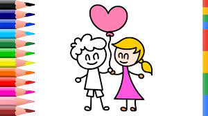
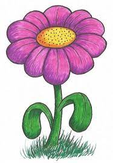
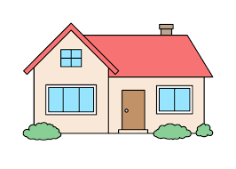

Experiment At Home
Simple Crafts
Basic Drawing
Origami
Drawing Instructions And Diagrams

Boy And Girl Drawing Step by Step !
Follow The video and decorate it on you own
It's very simple and easy.
Senary Drawing!
Follow The video and decorate it on you own
A landscape painting or drawing refers to an artwork whose primary focus is natural scenery, such as mountains, forests, cliffs, trees, rivers, valleys, etc

Step BY Step Flower!
Follow The video and decorate it on you own
Flowers did not always exist; they first appeared 140 million years ago.
Several centuries ago in Holland, tulips were more valuable than gold.

House!
Follow The video and decorate it on you own
The cabinet under your sink isn't really for storage